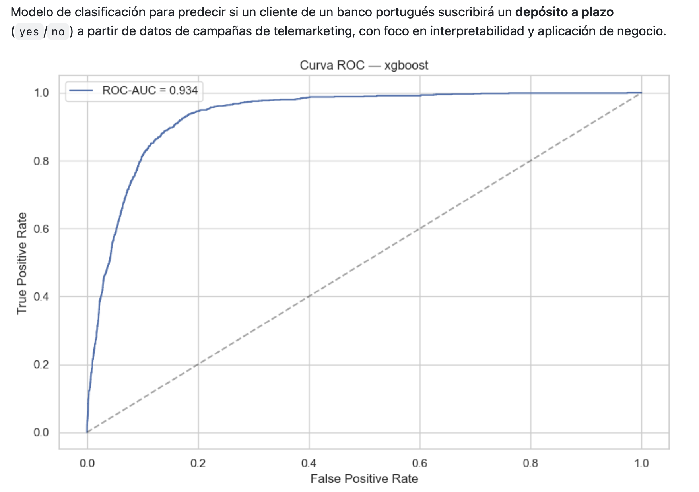

Bank Marketing
Predicción de la suscripción a depósitos a plazo mediante Machine Learning, con especial atención al desbalanceo de clases, la selección del umbral y la interpretabilidad.

01 · PROBLEMA
¿Qué clientes tienen mayor probabilidad de contratar un depósito?
El objetivo es estimar la probabilidad de que un cliente responda positivamente a una campaña de telemarketing y utilizar el modelo como apoyo para priorizar contactos.
02 · DATA
Un problema fuertemente desbalanceado
El fuerte desbalanceo hace que Accuracy sea una métrica poco adecuada como criterio principal. Un modelo que siempre predijera "no" alcanzaría aproximadamente un 88 % de accuracy sin aportar valor real.
03 · METHODOLOGY
Un pipeline orientado a evitar leakage
- Split train/test estratificado 80/20 antes de cualquier transformación.
- Tratamiento de valores "unknown" como valores faltantes.
- Ingeniería de variables y transformaciones logarítmicas.
- IterativeImputer integrado en pipelines.
- Comparación entre Regresión Logística, Random Forest y XGBoost.
04 · RESULTS
XGBoost como modelo seleccionado
XGBoost obtuvo el mejor Average Precision durante la validación cruzada y fue seleccionado para la evaluación final.
05 · THRESHOLD
El umbral también es una decisión de negocio
El modelo no se limita al umbral 0,5. Se analiza cómo cambian Precision, Recall, F1, F0.5 y F2 al modificar el punto de decisión.
Esto permite adaptar el comportamiento del modelo al coste real de una llamada frente al valor de detectar a un cliente que finalmente contrataría el producto.
06 · INTERPRETABILITY
De la predicción a la explicación
El proyecto combina odds ratios, importancia de variables y SHAP para estudiar qué variables están más asociadas con las predicciones.
El historial de campañas anteriores y la duración de la llamada aparecen entre los factores más relevantes.
07 · BUSINESS INSIGHTS
Aplicación a campañas de marketing
El modelo puede utilizarse como herramienta de priorización. El objetivo no es simplemente maximizar una métrica, sino elegir un equilibrio entre el número de contactos realizados y la cantidad de clientes potenciales detectados.
08 · TECH STACK